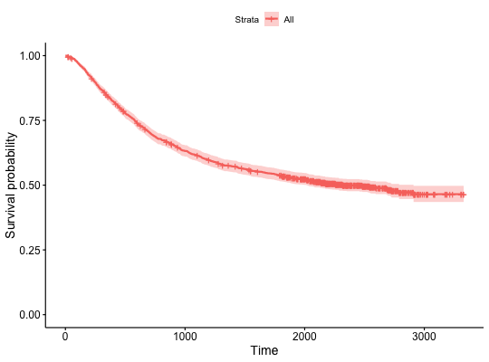
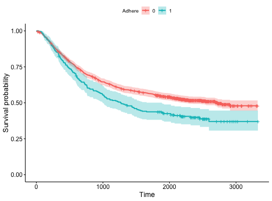

An extension to ggsurvplot() to plot survival curves from
any data frame containing the summary of survival curves as returned the
surv_summary() function.
Might be useful for a user who wants
to use ggsurvplot for visualizing survival curves computed by another
method than the standard survfit.formula function. In this
case, the user has just to provide the data frame containing the summary of
the survival analysis.
ggsurvplot_df(fit, fun = NULL, color = NULL, palette = NULL,
linetype = 1, break.x.by = NULL, break.time.by = NULL,
break.y.by = NULL, surv.scale = c("default", "percent"), xscale = 1,
conf.int = FALSE, conf.int.fill = "gray", conf.int.style = "ribbon",
conf.int.alpha = 0.3, censor = TRUE, censor.shape = "+",
censor.size = 4.5, title = NULL, xlab = "Time",
ylab = "Survival probability", xlim = NULL, ylim = NULL,
axes.offset = TRUE, legend = c("top", "bottom", "left", "right", "none"),
legend.title = "Strata", legend.labs = NULL,
ggtheme = theme_survminer(), ...)
Arguments
- fit
- a data frame as returned by surv_summary. Should contains at least
the following columns:
- time: survival time
- surv:
survival probability
- strata: grouping variables
- n.censor: number
of censors
- upper: upper end of confidence interval
- lower: lower
end of confidence interval
- fun
- an arbitrary function defining a transformation of the survival
curve. Often used transformations can be specified with a character
argument: "event" plots cumulative events (f(y) = 1-y), "cumhaz" plots the
cumulative hazard function (f(y) = -log(y)), and "pct" for survival
probability in percentage.
- color
- color to be used for the survival curves.
- If the
number of strata/group (n.strata) = 1, the expected value is the color name.
For example color = "blue".
- If n.strata > 1, the expected value is the
grouping variable name. By default, survival curves are colored by strata
using the argument color = "strata", but you can also color survival curves
by any other grouping variables used to fit the survival curves. In this
case, it's possible to specify a custom color palette by using the argument
palette.
- palette
- the color palette to be used. Allowed values include "hue" for
the default hue color scale; "grey" for grey color palettes; brewer palettes
e.g. "RdBu", "Blues", ...; or custom color palette e.g. c("blue", "red").
See details section for more information. Can be also a numeric vector of
length(groups); in this case a basic color palette is created using the
function palette.
- linetype
- line types. Allowed values includes i) "strata" for changing
linetypes by strata (i.e. groups); ii) a numeric vector (e.g., c(1, 2)) or a
character vector c("solid", "dashed").
- break.x.by
- alias of break.time.by. Numeric value controlling x axis
breaks. Default value is NULL.
- break.time.by
- numeric value controlling time axis breaks. Default value
is NULL.
- break.y.by
- same as break.x.by but for y axis.
- surv.scale
- scale transformation of survival curves. Allowed values are
"default" or "percent".
- xscale
- numeric or character value specifying x-axis scale.
- If numeric, the value is used to divide the labels on the x axis. For
example, a value of 365.25 will give labels in years instead of the original
days.
- If character, allowed options include one of c("d_m", "d_y",
"m_d", "m_y", "y_d", "y_m"), where d = days, m = months and y = years. For
example, xscale = "d_m" will transform labels from days to months; xscale =
"m_y", will transform labels from months to years.
- conf.int
- logical value. If TRUE, plots confidence interval.
- conf.int.fill
- fill color to be used for confidence interval.
- conf.int.style
- confidence interval style. Allowed values include
c("ribbon", "step").
- conf.int.alpha
- numeric value specifying fill color transparency. Value
should be in [0, 1], where 0 is full transparency and 1 is no transparency.
- censor
- logical value. If TRUE, censors will be drawn.
- censor.shape
- character or numeric value specifying the point shape of
censors. Default value is "+" (3), a sensible choice is "|" (124).
- censor.size
- numveric value specifying the point size of censors.
Default is 4.5.
- title
- main title and axis labels
- xlab
- main title and axis labels
- ylab
- main title and axis labels
- xlim
- x and y axis limits e.g. xlim = c(0, 1000), ylim = c(0, 1).
- ylim
- x and y axis limits e.g. xlim = c(0, 1000), ylim = c(0, 1).
- axes.offset
- logical value. Default is TRUE. If FALSE, set the plot axes
to start at the origin.
- legend
- character specifying legend position. Allowed values are one of
c("top", "bottom", "left", "right", "none"). Default is "top" side position.
to remove the legend use legend = "none". Legend position can be also
specified using a numeric vector c(x, y); see details section.
- legend.title
- legend title.
- legend.labs
- character vector specifying legend labels. Used to replace
the names of the strata from the fit. Should be given in the same order as
those strata.
- ggtheme
- function, ggplot2 theme name. Default value is
theme_survminer. Allowed values include ggplot2 official themes: see
theme.
- ...
- other arguments to be passed i) to ggplot2 geom_*() functions such
as linetype, size, ii) or to the function ggpar() for
customizing the plots. See details section.
Examples
#> time n.risk n.event n.censor surv std.err upper lower
#> 1 8 1858 1 0 0.9994618 0.0005383580 1.0000000 0.9984077
#> 2 9 1857 1 0 0.9989236 0.0007615583 1.0000000 0.9974337
#> 3 19 1856 1 0 0.9983854 0.0009329660 1.0000000 0.9965614
#> 4 20 1855 1 0 0.9978471 0.0010775868 0.9999569 0.9957419
#> 5 23 1854 1 1 0.9973089 0.0012051037 0.9996673 0.9949561
#> 6 24 1852 1 1 0.9967704 0.0013206006 0.9993537 0.9941938
#> time n.risk n.event n.censor surv std.err upper lower
#> 1 8 1588 1 0 0.9993703 0.0006299213 1.0000000 0.9981372
#> 2 9 1587 1 0 0.9987406 0.0008911240 1.0000000 0.9969977
#> 3 19 1586 1 0 0.9981108 0.0010917438 1.0000000 0.9959774
#> 4 20 1585 1 0 0.9974811 0.0012610351 0.9999495 0.9950188
#> 5 23 1584 1 1 0.9968514 0.0014103253 0.9996107 0.9940997
#> 6 24 1582 1 1 0.9962213 0.0015455856 0.9992437 0.9932080
#> strata adhere
#> 1 adhere=0 0
#> 2 adhere=0 0
#> 3 adhere=0 0
#> 4 adhere=0 0
#> 5 adhere=0 0
#> 6 adhere=0 0
